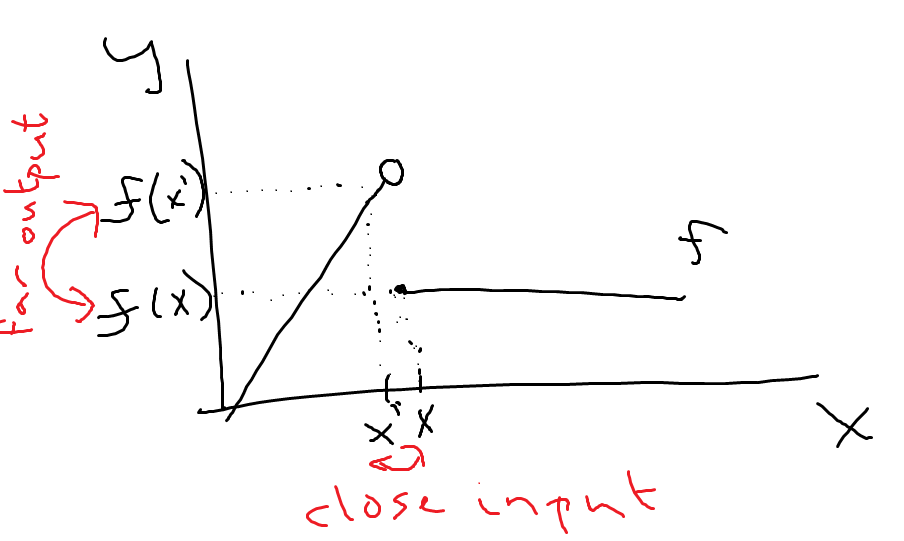
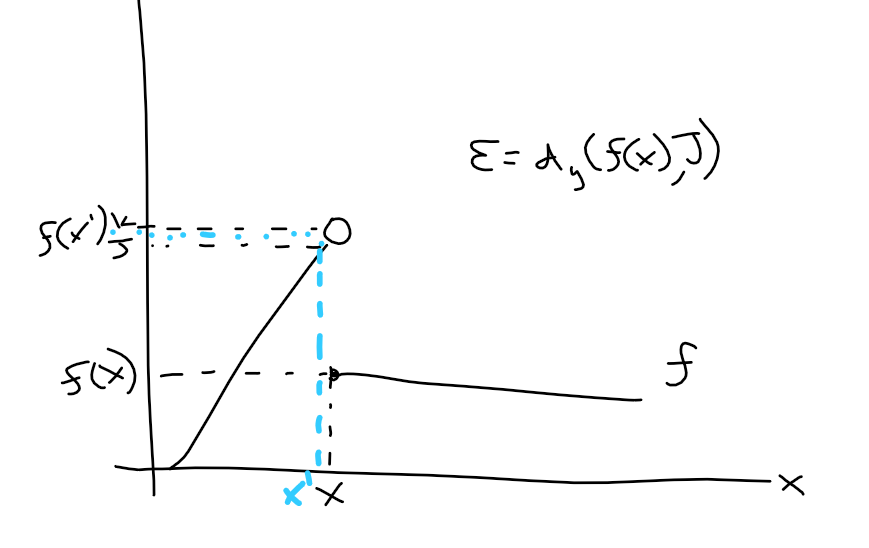
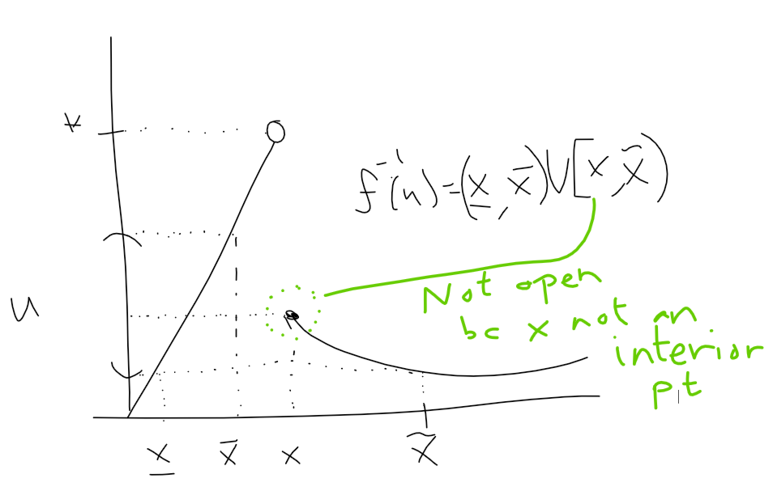
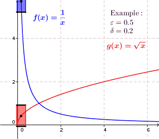
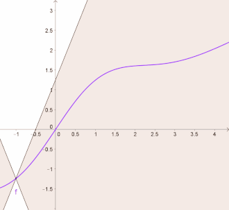
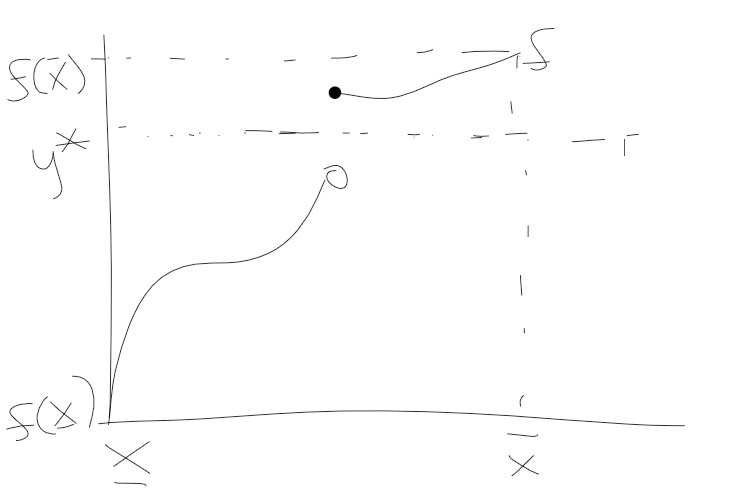
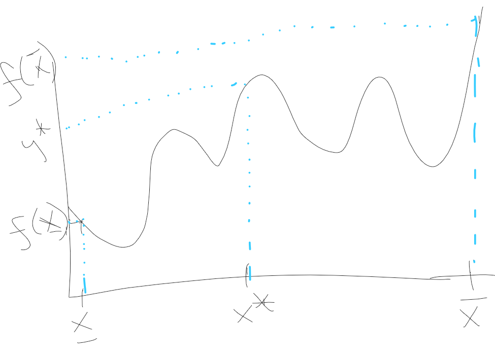
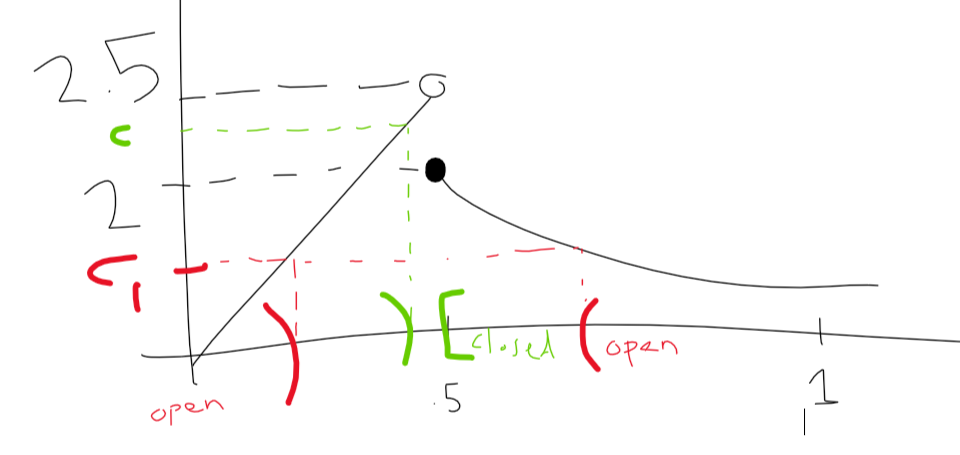

7 Continuity
Fix \((X, d_x)\) and \((Y,d_y)\). Look at \(f: X \rightarrow Y\).

7.0.1 Def “continuous at”
Say a function \(f: X \rightarrow Y\) is continuous at \(x\) if for each \(\varepsilon > 0\) there exists \(\delta >0\) such that \(d_x(x,x') < \delta\) implies \(d_y(f(x),f(x')) < \varepsilon\)
for each \(\delta > 0\) there is an \(x'\) with \(d_x(x,x') < \delta\) but \(f(x') > J\) and so \(d_y(f(x),f(x')) > \varepsilon\)
\(\varepsilon = d_y(f(x), J)\)

7.0.2 Prop 1 “continuous \(\iff\) limits contained”
A function \(f: X \rightarrow Y\) is continuous at \(x\in X \iff\) for each sequence \((x_n: n \geq 1)\) on \((X, d_x)\) with \(lim_{n\rightarrow \infty} x_n = x \in X, lim_{n\rightarrow \infty} f(x_n) = f(x) \in Y\)
7.0.3 Def “continuous function”
A function \(f: X \rightarrow Y\) is continuous if it is continuous at each \(x\in X\).
7.0.4 Prop 2 “continuous \(\iff\) inverse is open”
A function \(f: X\rightarrow X\) is continuous if and only if, for each open set, \(U \subseteq Y, f^{-1}(U) \subseteq X\) is open.

\(x \in f^{-1}(u)\) is not an interior point because for each \(B(x, \varepsilon)\) there is discontinuity within the ball.
Example 1 Simple examples of continuous functions:
- \((X, d_x) = (Y,d_y)\), take \(f: X\rightarrow Y\) to be the identity function, \(f(x)=x\in Y = X\).
Fix \(U \subseteq Y = X\) open in \((Y, d_y) \Rightarrow f^{-1}(U)=U\) open in \((X,d_x)=(Y,d_y)\)
start with \(\{x\}\) in \((Y,d_y) = (\mathbb{R}, d^{disc})\) then \(f^{-1}(\{x\}) = \{x\}\) not open in \((\mathbb{R}, d^{u})\)
singleton sets are open in discrete metric, but not in Euclidean metric!
- Constant function: \(f: X\rightarrow Y\) there exists \(y^* \in Y\) such that \(f(x)=y^*\) for all \(x\in X\).
Example 2 \((X, d_x)\) where \(X\) is finite. Any \(f: X \rightarrow Y\) is continuous.

key: since \(X\) is finite, \(f^{-1}(U)\) must be open since any subset of a finite set is open.
Example 3 \(X=Y=\mathbb{R}, d_x=d_y=d^u\). \(f(x)=mx+b\) for \(m \neq 0\).
to show \(f\) is continuous, fix \(\varepsilon >0\) and some \(\delta >0\) such that \(|x-x'|< \delta\) then \(|mx+b - (mx' + b)| = |m||x-x'| < \varepsilon\). Take \(\delta = \varepsilon / |m|\) and we can show this.
7.0.5 Prop 3 “combining continuous functions”
Fix \(f: X \rightarrow \mathbb{R}\) and \(g: X \rightarrow \mathbb{R}\) that are both continuous (on \((x, d_x), (\mathbb{R}, d^u)\))
- \(f+g\) is continuous (\(x \rightarrow f(x) + g(x)\))
- \(f * g\) is continuous (\(x \rightarrow f(x) * g(x)\))
- \(f/g\) is continuous (if, for each \(x\in X, g(x)\neq 0\)) (\(x \rightarrow f(x) / g(x)\))
- \(\max\{f,g\}\) is continuous (\(x \rightarrow \max\{f(x), g(x)\}\))
- \(\min\{f,g\}\) is continuous (\(x \rightarrow \min\{f(x), g(x)\}\))
- \(|f|\) is continuous (\(x\rightarrow |f(x)|\))
so, using prop 3 on example 3 could simplify things. we’d just say, “well, we know any constant (\(m\) and \(b\)) function is continuous, and we know the identity function (\(f(x) = x\)) is continuous, and we know that the product of two continuous functions is continuous (number 2 in prop 3) and the sum of two continuous function (\(mx\) and \(b\)) is continuous, so \(f(x) = mx + b\) is continuous.”
7.1 Other notions of continuity
7.1.1 Def “lower semi-continuous”
Fix a function \(f: X\rightarrow \mathbb{R}\).
- \(f\) is lower semi-continuous if, for each \(c \in \mathbb{R}, f^{-1}(c,\infty)\) is open
- \(f\) is upper semi-continuous if, for each \(c \in \mathbb{R}, f^{-1}(-\infty, c)\) is open
It’s immediate that if \(f\) is continuous, then it’s both upper and lower semi-continuous. It’s less obvious (though we will see this is, indeed, true later) that if \(f\) if upper and lower semi-continuous that \(f\) is continuous.
Example 4b \(f: \mathbb{R} \rightarrow \mathbb{R}\) such that \[f(x) = \begin{cases} 0 \text{ if } x \leq 0 \\ 1 \text{ if } x>0 \end{cases}\]
Choose \(c = 1/2\), an arbitrary point between 0 and 1.
Checking upper semi-continuity: \[f^{-1}(-\infty, 1/2) = (-\infty, 0]\] this is not open, so we fail upper semi-continuity. so, \(f\) is not continuous.
Checking lower semi-continuity: \[f^{-1}(c,\infty) = \begin{cases} \emptyset \text{ if } c \geq 1 \\ (0,\infty) \text{ if } 0 \leq c < 1 \\ \mathbb{R} \text{ if } c < 0 \end{cases}\]
These are all open sets, so \(f\) is lower semi-continuous.
Now, changing the function:
\[g(x) = \begin{cases} 0 \text{ if } x<0 \\ 1 \text{ if } x \geq 0 \end{cases}\]
Checking upper semi-continuity: \[g^{-1}((-\infty, c)) = \{x\in \mathbb{R}: f(x) < c\}\]
\[g^{-1}((-\infty, c)) = \begin{cases} \emptyset \text{ if } c \leq 0 \\ (\infty, 0) \text{ if } 0 < c \leq 1 \\ \mathbb{R} \text{ if } c > 1 \end{cases}\]
Checking lower semi-continuity: \[g^{-1}((1/2, \infty)) = [0,\infty)\] which is NOT open.
7.1.2 Prop 4 “cont iff upper and lower semi-cont”
A function \(f: X \rightarrow \mathbb{R}\) is continuous if and only if it is both upper and lower semi-continuous.
7.1.3 Def “uniformly continuous”
A function \(f: X \rightarrow Y\) is uniformly continuous if, for each \(\varepsilon > 0\) there exists \(\delta > 0\) such that for every \(x\in X\) with \(d_x(x, x') < \delta\) implies \(d_y(f(x), f(x')) < \varepsilon\).
Graphical intuition: “if the function breaches top and bottom of box, it’s not uniformly cont” (\(\varepsilon\) is the vertical, \(\delta\) is the horizontal)

7.1.4 Def “Lipschitz Continuity”
A funtion, \(f: X \rightarrow Y\) is Lipschitz Continuous if there exists \(K \in \mathbb{R}\) such that for any \(x,x' \in X\) \[d_y(f(x),f(x')) \leq K d_x(x,x')\] Graphical intuition: “can’t have any part of the function in the white cones”

Example 5 Let \(f: \mathbb{R}^+ \rightarrow \mathbb{R}, f(x) = x^2\).
Want to show: \(f\) is not uniformly continuous. To see this, fix \(\varepsilon > 0\) and fix \(\delta >0\).
To show: there exists \(x, y \in \mathbb{R}^+\) with \(|x-y| < \delta\) but \(|x^2 - y^2| \geq \varepsilon\).
Pick \(x = \varepsilon / \delta, y = x + \delta/2\).
Then \(|x-y| = \delta/2 < \delta\) and \(|x^2 - y^2| = |(\varepsilon / \delta + \delta / 2)^2 - (\varepsilon/\delta)| = 2(\varepsilon/\delta)(\delta/2) + (\delta/2)^2 = \varepsilon + (\delta/2)^2 > \varepsilon\).
So, \(f\) is not uniformly continuous. But, it might be continuous. Check that next.
Showing \(f\) is continuous: Fix \(x\) and fix \(\varepsilon > 0\). Let \(\delta = \min\{1, \frac{\varepsilon}{2(x+1)}\}\). Fix \(y\) such that \[|x-y| < \delta \leq 1 \Rightarrow y < x+1 \Rightarrow |x^2 - y^2| = \\ |(x+y)(x-y)| = (x+y)|x-y| < 2(x+1)|x-y| < 2(x+1)\delta \leq \varepsilon\]
*Note that \(y < x+1 \iff x+y < 2x+1 \iff x+y < 2(x+1)\)
7.1.5 Thm: “Intermediate Value Theorem”
Let \(f: [\underline{x}, \bar{x}] \rightarrow \mathbb{R}\) be a continuous function. For each \(y^* \in \{y \in \mathbb{R}: f(\bar{x}) \geq y \geq f(\underline{x}) \text{ or } f(\underline{x}) \geq y \geq f(\bar{x})\}\) there exists \(x^* \in [\underline{x}, \bar{x}]\) such that \(f(x^*) = y^*\).


7.1.6 Def “maximum” “minimum”
Say \(f: X \rightarrow \mathbb{R}\) achieves a maximum if there exists \(\bar{x} \in X\) such that \(f(\bar{x}) \geq f(x)\) for all \(x \in X\).
Say \(f: X \rightarrow \mathbb{R}\) achieves a minimum if there exists \(\underline{x} \in X\) such that \(f(\underline{x}) \leq f(x)\) for all \(x \in X\).
7.1.7 Thm “Weierstrauss if compact then cont fn has max/min”
Let \((X, d)\) be a compact metric space. Any continuous function \(f: X\rightarrow \mathbb{R}\) achieves a maximum and a minimum.
Example 6 Let \(X \subseteq \mathbb{R}\) with the usual metric and let \(f: X \rightarrow \mathbb{R}\) be \(f(x) = x\). Note that \(f\) is continuous. Then
- \(X = \mathbb{R}\): \(f\) doesn’t achieve maximum
- \(X = \mathbb{N}\): \(f\) doesn’t achieve maximum
- \(X = \cup_{k=1}^{k}[\underline{x_k}, \bar{x_k}]\) where \(\bar{x_k} > \bar{x_{k - 1}}, ..., \bar{x_1}\): \(f\) DOES achieve maximum
Example 7 Let \(f: [0,1] \rightarrow \mathbb{R}, f(x) =\) \[\begin{cases} 5x \text{ if } x \in [0,1/2) \\ 1/x \text{ if } x \in [1/2,1] \end{cases}\] See pic: \(f\) is upper semi-cont at \(c_1\), but not at \(c\), so it’s not upper semi-cont.
